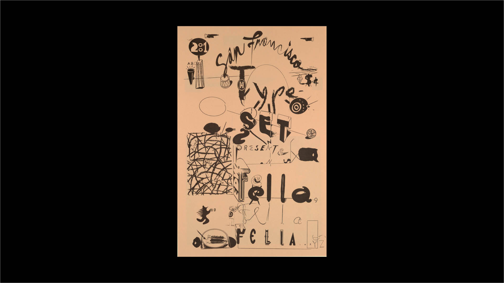

WORKSHOP 1
Detailed conversations
“Anything can be made in anything.”
—Ed Fella

Poster Announcement, San Francisco Type Set - Ed Fella, 2001; Designed by Edward Fella (American, b. 1938); Gift of Edward Fella; 2002-8-24
QUESTION
How can you develop a character set based off someones physical features?
BACKGROUND
Letters were originally developed based off of human characteristics. A ear, arm, shoulder and leg are all
terms used to describe specific typographic elements. This workshop has several steps. It’s actually a little complicated.
It’s meant to introduce you to your classmates. Drawing plays a crucial role. But not only will we draw,
we’ll draw with something like charcol. It’s difficult and messy.
INSTRUCTIONS
In pairs, draw each other. 18in x 24in format. We call this “blind drawing”. You can look at each other, but not at the paper.
Meanwhile, have a conversation. Take notes or record it.Exchange and analyse your drawings.
Extract interesting shapes and details. Your your notes from the conversation into a short text.
Design a letter using the extracted shapes and details of the student who made the drawing.
Make a whole alphabet based on that letter you created in class. It can be any media. Draw it, paint it, digitize it, scan it. As long as you bring in a full alphabet.
(Bonus) Set your exchanged conversation in the your alphabet.